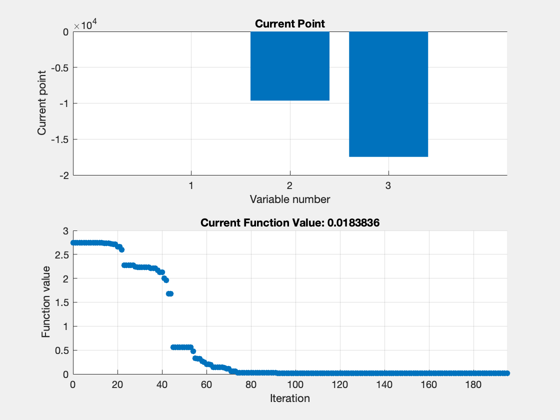
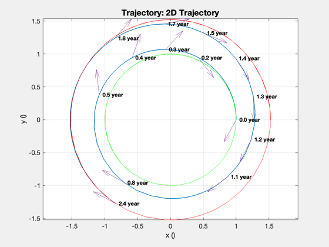
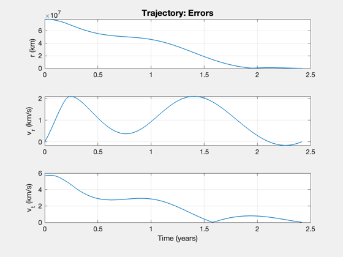
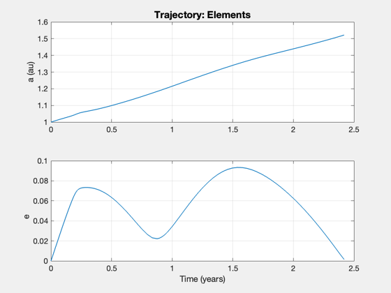

Demonstrate the Trajectory optimization function for sails in 2D orbits.
Choose either Simplex or genetic algorithms. Select either a Mars transfer or the planar portion of Solar Polar Imager (SPI). Choose either Simplex or GA for each run at the top of the script. Assumes a perfectly specular sail.
Functions demonstrated: TwoDOptimalSailAngle RHSOpt2DOrbit Plot2DTrajectory CostSail2D TrajectoryOptimization
Since version 7. ------------------------------------------------------------------------ See also Constant, Planets, heuristicXover, nonUnifMutation, normGeomSelect, Plot2DTrajectory, TwoDOptimalSailAngle, CostSail2D, TrajectoryOptimization, RHSOpt2DOrbit ------------------------------------------------------------------------
Contents
%------------------------------------------------------------------------------- % Copyright (c) 2005-2006 Princeton Satellite Systems, Inc. % All rights reserved. %------------------------------------------------------------------------------- disp('This demo takes several minutes to run.') %%%%%%%%%%%%%%%%%%%%%%%%%%%%% % User input method = 1; % 1, simplex 2, genetic algorithms mission = 'mars'; % 'spi' or 'mars' %%%%%%%%%%%%%%%%%%%%%%%%%%%%%
This demo takes several minutes to run.
On the next pass use the newly computed lambda as the first guess
%------------------------------------------------------------------ d.repeat = 0; aU = Constant('au'); c = Constant('speed of light'); % km/s
Spacecraft properties
%----------------------
This assumes 100 kg mass, 160x160 m sail
%----------------------------------------- area = 160^2; mass = 350; loading = mass/area; % acceleration is premultiplied by au^2 for scaling in RHS d.d.accel = area*1367*1e-6/(c*mass)*aU^2; % km/sec^2 d.d.sailAngleFun = @TwoDOptimalSailAngle; lightness = LoadingToLightness(loading)
lightness =
0.11191
Heliocentric system
%--------------------- d.d.mu = Constant('mu sun');
Dynamics function
%------------------
d.d.rhsFun = @RHSOpt2DOrbit;
d.d.plotFun = @Plot2DTrajectory;
Cost function called by optimizer
%----------------------------------
d.d.costFun = @CostSail2D;
Initial costate guess
%---------------------- % Boundary conditions, initial and final state % [r;rDot;v;m] %--------------------------------------------- switch mission case 'spi' rF = 0.48*aU; lambda0 = [0.151216557215921; 24176.8510939925; 803052.637561317 ]; nDays = 2.5*365; case 'mars' [name,rF] = Planets('rad',4); rF = rF(1)*aU; lambda0 = [-0.001047975499; 21925.68149; 201476.7856]; nDays = 2.7*365; end d.d.x0 = [aU;0;sqrt(d.d.mu/aU)]; d.d.xF = [rF;0;sqrt(d.d.mu/rF)]; d.d.rF = d.d.xF(1); d.d.lambda0 = lambda0;
Integration (ode113) parameters
%-------------------------------- d.d.data.absTol = 1e-8; d.d.data.relTol = 2.5e-6; d.d.data.maxStep = 0.1; % ode113 will never take a step bigger than this % fraction of the end time d.d.tEnd = nDays*86400; % (s)
Weights for the costates
%------------------------- d.d.errorScale = [d.d.xF(3)/d.d.xF(1); 1; 1]; switch method case 1 %----------------------------- % 1. Downhill simplex (fminsearch) %----------------------------- d.method = 'downhill simplex'; % Simplex parameters %------------------- d.d.stateTol = 1e-4; d.d.funTol = 1e-2; d.d.nIts = 600; % Optimize the trajectory. It will used Plot2DTrajectory % to plot the results %------------------------------------------------------- lambda = TrajectoryOptimization( d ); disp('Costates for Simplex') disp(lambda{1}) case 2 %----------------------------- % 2. Genetic algorithm (GAOT) %----------------------------- d.method = 'genetic algorithm'; % The number of individuals %-------------------------- d.d.nI = 40; % The number of generations %-------------------------- d.d.nG = 35; % The bounds on the costate %-------------------------- d.d.bounds = [-10 10; 1e6*[-1 1; -1 1]]; % The selection function %----------------------- d.d.fncSelect = @normGeomSelect; d.d.optSelect = [0.01]; % The crossover function %----------------------- d.d.fncXOver = @heuristicXover; d.d.optXOver = [40 5 ]; % The mutation function %---------------------- d.d.fncMutate = @nonUnifMutation; d.d.optMutate = [10 d.d.nG 3]; % Optimize %--------- lambda = TrajectoryOptimization( d ); disp('Costates for Genetic Algorithm') disp(lambda{1}) end %-------------------------------------- % PSS internal file version information %-------------------------------------- % $Id: 8d2dd68e9b88b2fa1a575e90c5f33e64f9f8c1e7 $
Case 1: Method: downhill simplex
Iteration Func-count f(x) Procedure
0 1 2.7486
1 4 2.74563 initial simplex
2 6 2.74563 contract inside
3 11 2.74563 shrink
4 12 2.74563 reflect
5 13 2.74563 reflect
6 15 2.74507 expand
7 17 2.74401 expand
8 19 2.74401 contract inside
9 21 2.74401 contract inside
10 23 2.74309 expand
11 24 2.74309 reflect
12 26 2.74112 expand
13 27 2.74112 reflect
14 29 2.737 expand
15 31 2.73298 expand
16 32 2.73298 reflect
17 34 2.72317 expand
18 36 2.71053 expand
19 37 2.71053 reflect
20 39 2.65836 expand
21 40 2.65836 reflect
22 42 2.59477 expand
23 44 2.27668 expand
24 45 2.27668 reflect
25 46 2.27668 reflect
26 48 2.27668 contract inside
27 50 2.27668 contract inside
28 52 2.24113 contract inside
29 54 2.23612 reflect
30 55 2.23612 reflect
31 57 2.23612 contract inside
32 59 2.23612 contract outside
33 61 2.23033 expand
34 63 2.23033 contract inside
35 65 2.21052 expand
36 66 2.21052 reflect
37 67 2.21052 reflect
38 69 2.16835 expand
39 71 2.12258 expand
40 72 2.12258 reflect
41 74 1.99821 reflect
42 76 1.96015 expand
43 78 1.67879 reflect
44 80 1.67879 contract inside
45 82 0.56169 reflect
46 84 0.56169 contract inside
47 86 0.56169 contract inside
48 87 0.56169 reflect
49 89 0.56169 contract inside
50 91 0.56169 contract inside
51 93 0.56169 contract inside
52 95 0.56169 contract outside
53 97 0.56169 contract inside
54 99 0.476265 reflect
55 101 0.324842 contract inside
56 103 0.321559 contract inside
57 105 0.321559 contract inside
58 107 0.262106 contract inside
59 109 0.241452 contract inside
60 111 0.205268 contract inside
61 113 0.205268 contract outside
62 115 0.1964 contract inside
63 117 0.140634 expand
64 118 0.140634 reflect
65 120 0.140634 contract inside
66 122 0.135986 reflect
67 123 0.135986 reflect
68 125 0.126129 reflect
69 127 0.11192 contract inside
70 128 0.11192 reflect
71 130 0.0590076 expand
72 131 0.0590076 reflect
73 132 0.0590076 reflect
74 134 0.0275728 reflect
75 136 0.0275728 contract inside
76 137 0.0275728 reflect
77 139 0.0275728 contract inside
78 140 0.0275728 reflect
79 142 0.0275728 contract inside
80 144 0.0275728 contract inside
81 146 0.0275728 contract inside
82 148 0.0275728 contract outside
83 153 0.0210017 shrink
84 155 0.0210017 contract inside
85 160 0.0210017 shrink
86 161 0.0210017 reflect
87 162 0.0210017 reflect
88 163 0.0210017 reflect
89 164 0.0210017 reflect
90 169 0.0210017 shrink
91 171 0.0210017 contract inside
92 173 0.0200854 reflect
93 175 0.0200854 contract inside
94 177 0.0200854 contract inside
95 178 0.0200854 reflect
96 180 0.0200854 contract inside
97 182 0.0192678 expand
98 184 0.0192678 contract inside
99 185 0.0192678 reflect
100 187 0.0192678 contract inside
101 189 0.0190112 reflect
102 191 0.0185928 reflect
103 193 0.0185106 reflect
104 195 0.0185106 contract inside
105 197 0.0185106 contract inside
106 199 0.0185106 contract inside
107 201 0.018435 reflect
108 203 0.018435 contract inside
109 205 0.018435 contract inside
110 207 0.0184293 reflect
111 209 0.0184293 contract inside
112 211 0.0183956 reflect
113 213 0.0183956 contract inside
114 215 0.0183956 contract inside
115 217 0.0183956 contract inside
116 218 0.0183956 reflect
117 220 0.0183956 contract inside
118 222 0.0183956 contract inside
119 224 0.0183956 contract inside
120 226 0.0183956 contract inside
121 228 0.0183931 reflect
122 230 0.0183931 contract inside
123 232 0.0183902 reflect
124 234 0.0183902 contract inside
125 236 0.0183902 contract inside
126 238 0.0183902 contract inside
127 240 0.0183869 expand
128 242 0.0183869 contract inside
129 244 0.0183869 contract inside
130 246 0.0183869 reflect
131 248 0.0183869 contract inside
132 250 0.0183854 reflect
133 252 0.0183854 contract inside
134 254 0.0183854 contract inside
135 255 0.0183854 reflect
136 257 0.0183854 contract inside
137 259 0.0183854 contract inside
138 261 0.0183845 expand
139 263 0.0183845 contract inside
140 265 0.0183845 contract inside
141 266 0.0183845 reflect
142 268 0.0183843 reflect
143 270 0.0183843 contract inside
144 272 0.0183843 contract inside
145 274 0.0183843 reflect
146 276 0.018384 reflect
147 278 0.0183839 reflect
148 280 0.0183839 contract inside
149 282 0.0183838 reflect
150 284 0.0183838 contract inside
151 286 0.0183838 contract inside
152 288 0.0183837 reflect
153 290 0.0183837 contract inside
154 292 0.0183837 reflect
155 294 0.0183837 contract inside
156 296 0.0183837 contract inside
157 298 0.0183837 reflect
158 300 0.0183837 contract inside
159 302 0.0183837 reflect
160 304 0.0183837 contract inside
161 306 0.0183837 reflect
162 308 0.0183836 reflect
163 310 0.0183836 reflect
164 312 0.0183836 contract inside
165 314 0.0183836 reflect
166 316 0.0183836 contract inside
167 318 0.0183836 reflect
168 320 0.0183836 contract inside
169 322 0.0183836 contract inside
170 324 0.0183836 reflect
171 326 0.0183836 expand
172 328 0.0183836 contract inside
173 329 0.0183836 reflect
174 331 0.0183836 contract inside
175 333 0.0183836 contract inside
176 335 0.0183836 contract inside
177 337 0.0183836 reflect
178 339 0.0183836 reflect
179 341 0.0183836 contract inside
180 343 0.0183836 contract inside
181 345 0.0183836 contract inside
182 347 0.0183836 contract inside
183 348 0.0183836 reflect
184 350 0.0183836 reflect
185 352 0.0183836 contract inside
186 354 0.0183836 contract inside
187 356 0.0183836 contract inside
188 358 0.0183836 contract inside
189 363 0.0183836 shrink
190 365 0.0183836 expand
191 367 0.0183836 contract inside
192 369 0.0183836 reflect
193 371 0.0183836 reflect
194 373 0.0183836 contract inside
195 378 0.0183836 shrink
Optimization terminated:
the current x satisfies the termination criteria using OPTIONS.TolX of 1.000000e-04
and F(X) satisfies the convergence criteria using OPTIONS.TolFun of 1.000000e-02
Radial position error = 696.5657 (km)
Radial velocity error = 0.0089 (km/s)
Tangential velocity error = 0.0161 (km/s)
Time of minimum error = 2.4188 year
Costates for Simplex
-0.0038444
-9640.8
-17466
   